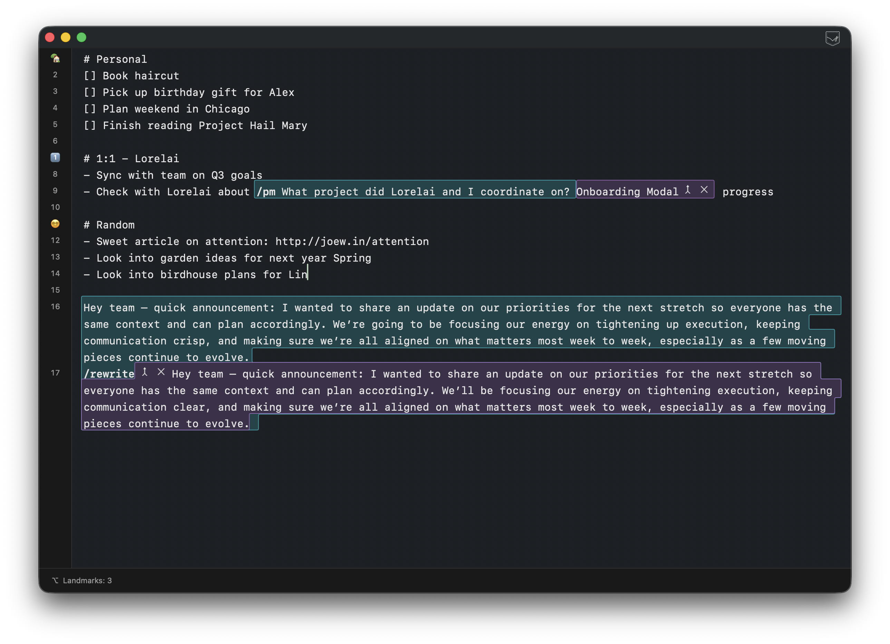

01 / Find your place
Landmarks to guide you.
Give important lines a visual marker, then scan and jump through your notes without breaking your train of thought.
A text editor you can tell your mom about
A fast, native scratchpad for Mac. Keep it simple, or dress it up with tools, scripts, and automation.
Plain text. Local first. Just works.

01 / Find your place
Give important lines a visual marker, then scan and jump through your notes without breaking your train of thought.

02 / Make it yours
Turn your text into something powerful. Use JavaScript, AI assistants, and transform text directly in the document with no context switching.

03 / Never lose a thought
Browse the history of your document, inspect exactly what changed, and return to an earlier snapshot whenever you need it.
Your files belong to you
No account maze. No proprietary workspace. Just text in an editor, even if you're a power user.
Jort is a native Mac text editor for people who think in text, move quick, and have a taste for something more.
Download for macOS